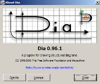
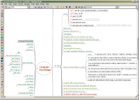
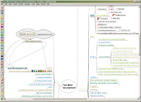
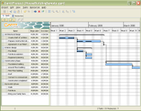
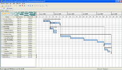
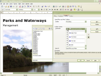
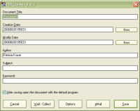
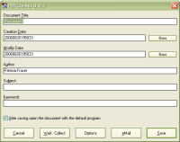

โปรแกรมวาดแผนภาพต่างๆเช่น entity-relationship models, UML diagrams, flowcharts, แผนภาพ network และวงจรไฟฟ้า Dia สามารถบันทึก และเปิดไฟล์ XML และ export เป็นสกุล EPS, SVG, XFIG, WMF และ PNG ได้ และคุณยังสามารถสั่งพิมพ์แผนภาพได้ด้วย

เวอร์ชัน: 0.96.1-9
โปรแกรมในการวาด mind map ที่ช่วยได้มากกว่าการวาด FreeMind ช่วยให้คุณสะดวกในการจัดการกับความคิด จัดหมวดหมู่ คลิกเพื่อ fold/unfold ทั้งกิ่ง นอกจากใส่ข้อความและรูปไอคอน คุณยังสามารถใส่ link ไปยังไฟล์หรืออินเทอร์เน็ต FreeMind เหมาะที่จะใช้กับการ brainstorm, สร้างฐานความรู้ หรือฐานข้อมูล หรือแม้แต่จัดการโครงการ
 เวอร์ชัน: 0.8.1
โปรแกรมสำหรับบริหารจัดการโครงการ ซึ่งมาพร้อมกับฟังก์ชันการใช้งานที่ครบครัน เช่น ระยะเวลาของโครงการ การตั้งค่าระดับความสำคัญของงาน การบันทึกข้อความของโครงการ การสร้างแผนผัง Gantt, PERT และอื่นๆ ซึ่งสามารถตอบสนองความต้องการของผู้บริหารโครงการอย่างคุณได้อย่างมีประสิทธิภาพ
 เวอร์ชัน: 2.0.9
OpenOffice.org เป็นชุด software ประกอบด้วย word processor, spreadsheet, web page editor และ presentation program เอกสารข้อมูลจะเก็บในรูปแบบ open-standard XML เพื่อให้แน่ใจว่าข้อมูลจะใช้ได้ในอนาคต และเป็นการลดขนาดไฟล์ด้วย คุณสามารถอ่านและเขียนเอกสารได้หลากหลาย format รวมถึง format ของ Microsoft Office

เวอร์ชัน: 3.0.1
สร้างไฟล์ PDF โดยตรงจากโปรแกรมอะไรก็ได้ เพียงคุณติดตั้ง PDFCreator สั่งพิมพ์ เลือกเครื่องพิมพ์เป็น PDFCreator กด Save แล้วตั้งชื่อไฟล์เท่านั้น เอกสาร PDF เป็นมาตรฐานสำหรับสิ่งพิมพ์อิเล็กทรอนิกส์ เพราะผู้เขียนสามารถมั่นใจได้ว่าเอกสารจะสามารถแสดง และพิมพ์ออกมาได้เหมือนกับที่ตั้งใจไว้เสมอ ไม่ว่าผู้อ่านจะใช้ระบบปฏิบัติการอะไร เพราะฉะนั้นมันจึงเหมาะที่จะใช้ในการแลกเปลี่ยนเอกสารที่ไม่ต้องการแก้ไขกับผู้อื่น
 

เวอร์ชัน: 0.9.7